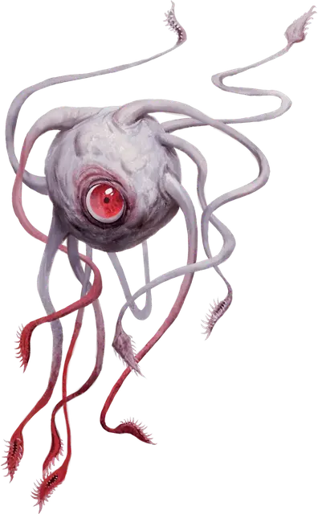

Поцелуй смерти
Death Kiss
Большая Аберрация (Бехолдер), обычно нейтрально-злая

Класс Доспеха 15 (природный доспех)
Хиты 142 (15к10 + 60)
Скорость 0 футов, летая 30 футов (парит)
| мод | спас | ||
|---|---|---|---|
| СИЛ | 18 | +4 | +4 |
| ЛОВ | 14 | +2 | +2 |
| ТЕЛ | 18 | +4 | +8 |
| мод | спас | ||
|---|---|---|---|
| ИНТ | 10 | +0 | +0 |
| МДР | 12 | +1 | +5 |
| ХАР | 10 | +0 | +0 |
Навыки Восприятие +5
Иммунитет к урону электричество
Иммунитет к состояниям сбивание с ног
Чувства тёмное зрение 120 футов, пассивное Восприятие 15
Языки Глубинная речь, Подземный
Опасность 10 (5900 опыта)
Бонус мастерства +4
Среда обитания Подземье
Особенности
Электрическая кровь. . Существо в 5 футах от поцелуя смерти получает 5 (1к10) урона электричеством, если попадает по поцелую смерти рукопашной атакой, которая наносит колющий или рубящий урон.
Действия
Мультиатака. Поцелуй смерти совершает три атаки Щупальцами. Каждая из них может быть заменена Высасыванием крови, на каждую замену должно быть по схваченному щупальцами существу.
Удар щупальцем. . Рукопашная атака оружием: +8 к попаданию, досягаемость 20 футов, одна цель. Попадание: 11 (2к6 + 4) колющего урона, и существо схвачено (Сл высвобождения 14), если оно Огромного размера или меньше. До окончания захвата цель опутана, и поцелуй смерти не может использовать это щупальце для атаки другого существа. У поцелуя смерти десять щупалец.
Высасывание крови. . Одно существо схваченное щупальцем поцелуя смерти должно совершить спасбросок Телосложения Сл 16. При провале существо получает 22 (4к10) урона электричеством, и поцелуй смерти восстанавливает количество хитов, равное половине от нанесённого урона.
Описание
Поцелуй смерти – это младший бехолдер, который может появиться во время того, как бехолдеру снится яркий кошмар о потере крови. По цвету и форме он похож на бехолдера, который вызвал его существование во сне, но оттенки более блеклые и вместо магических лучей из глаз у него десять длинных щупалец, на конце каждого рот полный зубов. Он может говорить сквозь любую из глоток щупалец, его голос звучит гнусаво и пискляво.
Поцелуи смерти боятся истинных бехолдеров, которые могут легко убить или подчинить их. Лишенный эгоизма своих более сильных сородичей, поцелуй смерти обычно подчиняется правлению бехолдера, которого встречает, хотя может попытаться сбежать если хозяин чем–то занят.
Поцелуй смерти живет только за счет поглощения крови, которую использует для создания электрической энергии в своем теле. У него паранойя о смерти от голода и он одержимо осушает даже маленьких существ, таких как крысы, пытаясь отодвинуть такую судьбу как можно дальше. После осушения добычи он отдает тело падальщикам. Под землей он использует щупальца как зонды, прощупывая и оценивая окружающую среду во всех направлениях. На поверхности, при охоте, он обычно притягивает щупальца к себе, а потом бросается и растягивает их на всю длину, заставая врагов врасплох.
Поцелую смерти не хватает боевого мастерства и интеллекта бехолдера. В большинстве случаев он прикрепляет одно или несколько щупалец к существу и высасывает кровь пока добыча не теряет сознание. Если он находится в позиции силы и оппонент не представляет угрозы, он может играть с едой, медленно сжимая и высасывая жизнь из существа. Поцелуй смерти предпочитает охотиться в одиночку. Если он встречает другого поцелуя смерти, то они могут сразиться, разбежаться или объединиться в зависимости от состояния здоровья и гордости.